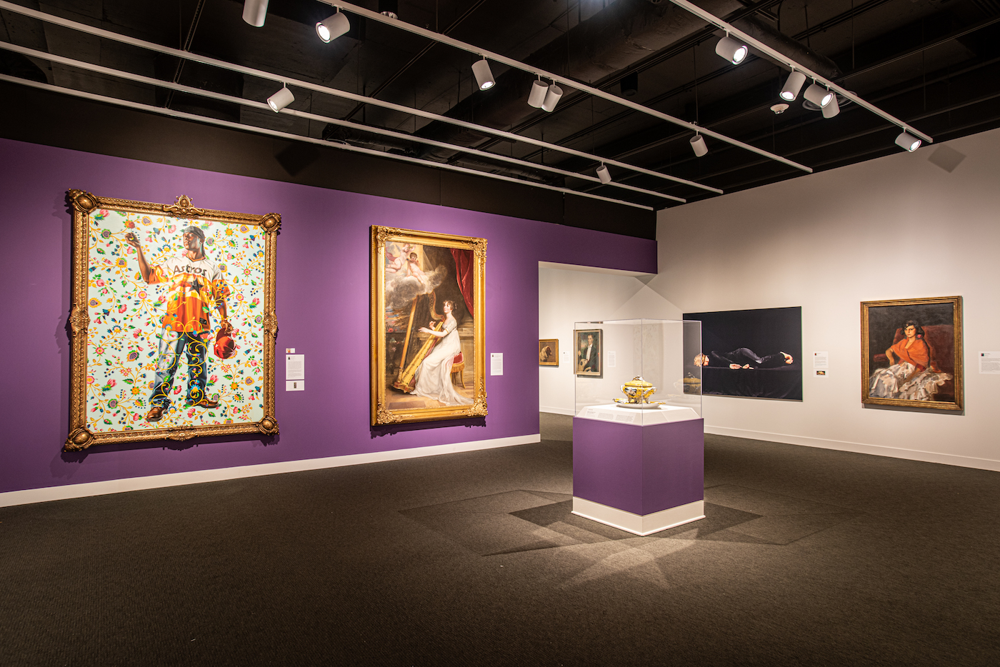
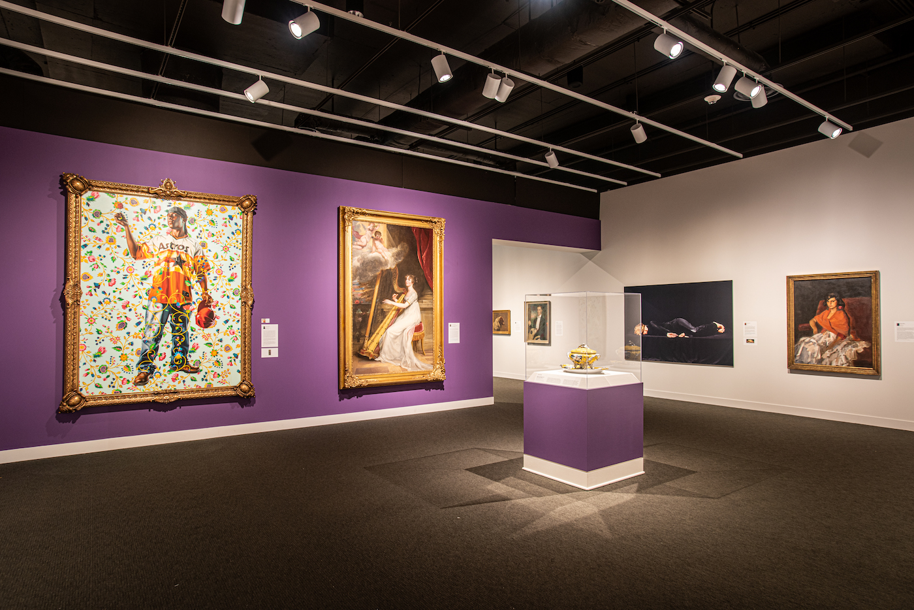

The Mint Museum, founded in 1936, holds the distinction of being North Carolina's very first art museum. For nearly a century, it has continued to thrive as one of the state's most significant cultural landmarks. Today, the museum houses an extraordinary collection of more than 35,000 works of art, including paintings, sculptures, and a wide variety of ancient artifacts.
 
